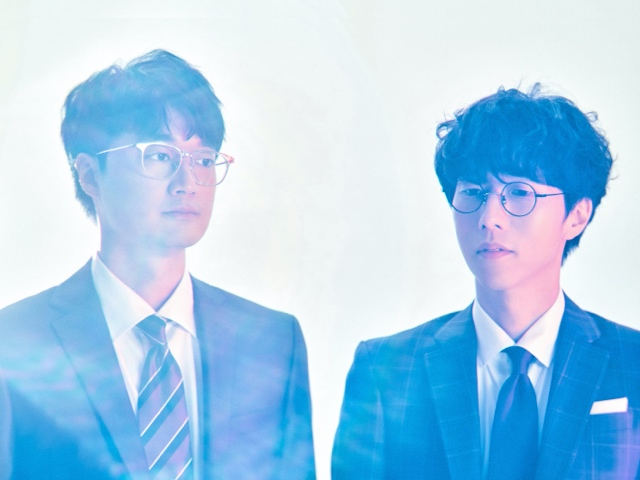

CONCERT
4월의 덕콘페퍼톤스
[T Factory X FLO 덕콘] 06 덕후팬들을 설레게하는 덕후콘, 페퍼톤스과 함께합니다.
4월의 덕콘
03. 덕후콘 - 안예은
04. 입덕콘 - 불고기디스코
05. 입덕콘 - 후추스
06. 덕후콘 - 페퍼톤스
T Factory x FLO 덕콘

T Factory와 FLO가 함께 만드는 팬 초청 소규모 콘서트를 소개합니다.
매월 입덕하고 싶은 아티스트와 덕후팬이 많은 아티스트를 선정하여 콘서트를 진행합니다.
본 콘서트는 무료로 진행되며, 선정된 아티스트가 직접 낸 팬심고사를 통과한 팬들 중 추첨을 통해 초청권을 드립니다.
페퍼톤스 소개

강렬하고 묵직한 청춘의 사운드, 그룹 페퍼톤스는 신재평과 이장원으로 이루어진 남성 2인조 음악 그룹이자 프로듀싱 유닛.
- 2003년 “후추처럼 기분 좋은 자극을 주겠다”며 의기투합해 ‘페퍼톤스(Peppertones)’를 결성했다.
- 2004년 데뷔 EP ‘A Preview’ 발표 후 2005년 첫 정규 앨범 ‘Colorful Express’으로 “우울증을 위한 뉴테라피 2인조”라는 타이틀 얻었다.
- 2008년 2집 ‘New Standard’부터 두 멤버의 보컬을 내세우기 시작했다.
- 2009년 3집 ‘Sounds Good!’으로는 보다 다채로운 색깔을 드러내며 유니크한 ‘페퍼톤스 사운드’를 대중들에게 각인시켰다.
- 2012년 4집 ‘Beginner’s Luck’과 EP ‘Open Run’에서는 밴드의 색채를 강화해 멤버들의 목소리로 채워진 음반을 발표했다.
- 2014년 5집 ‘하이파이브 (HIGH-FIVE)’에서는 더 빈티지한 밴드 사운드로 자연스러움에 초점을 맞추며 끝없이 이어지는 음악적 진화를 그려냈다.
- 2018년 5월, 약 4년 만의 정규 6집 ‘long way’를 발표, 14년간의 내공을 바탕으로, 서사를 강조한 옴니버스식 구성에 광활한 사운드를 담아내어 또다시 음악팬들의 열광을 일으켰다.
{{ $t('prd.schedule-place')}}
- 일정 : 4월 23일(금) 19시
- 응모기간 : 4월 15일(목) ~ 4월 20일(화)
- 당첨자 발표 : 4월 21일(수)
- 장소 : T Factory 2층, 0 Stage
{{ $t('prd.notice')}}
- 1. 본 공연은 팬심고사를 완료하신 분들 중 추첨을 통해 선정되며, 발표일에 선정자에게만 개별 연락 및 웹 내 팝업공지될 예정입니다.
- 2. 정부의 방역지침 변경이 있을 시 공연의 주요내용도 변경이 있을 수 있습니다.
- 3. 본 공연은 1인1매 좌석제로 운영되며, 추가적인 현장 스탠딩은 운영하지 않을 예정입니다.
- 4. 본 공연은 거리두기를 고려한 좌석배치로 인한 공간 제한으로 소규모 관람으로 운영됩니다.
- 5. 아티스트와 고객님의 안전을 위해 공연 중간의 토크 이외에 별도 팬미팅은 운영되지 않습니다.